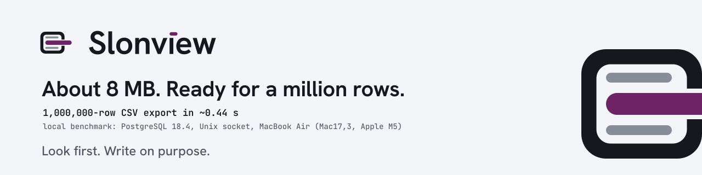
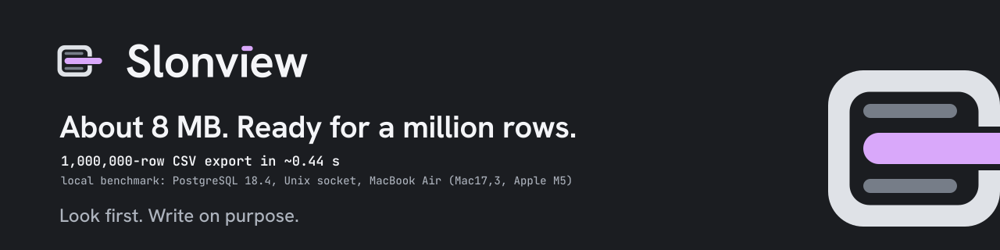
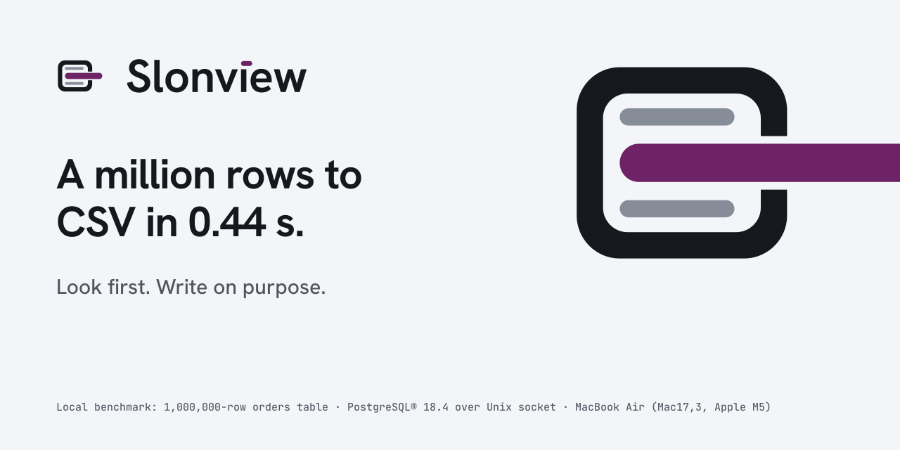

Symbol, wordmark, lockup (outlined SVG)
Hand-tuned 16 / 32 px symbol (1:1 and 4×)
Dock simulation, light and dark
Finder list (16 px) and Spotlight (32 px)
Slonview.app
Slonview.app
 Slonview
SlonviewSlonview
Motion: 2 s loop; static under prefers-reduced-motion
README header (light, dark) and social card


